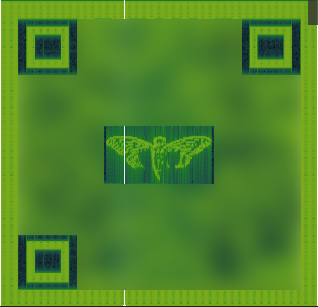
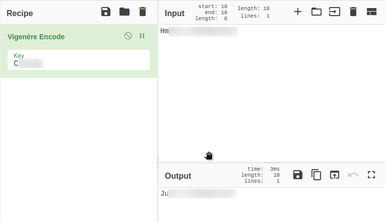
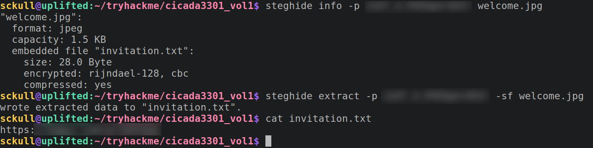
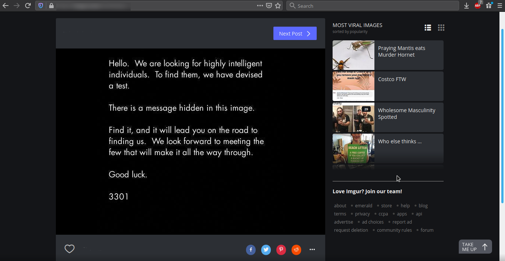
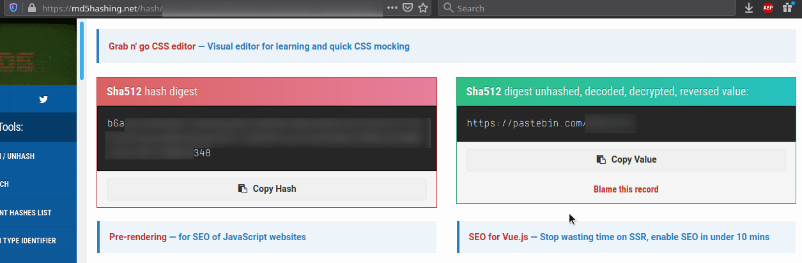
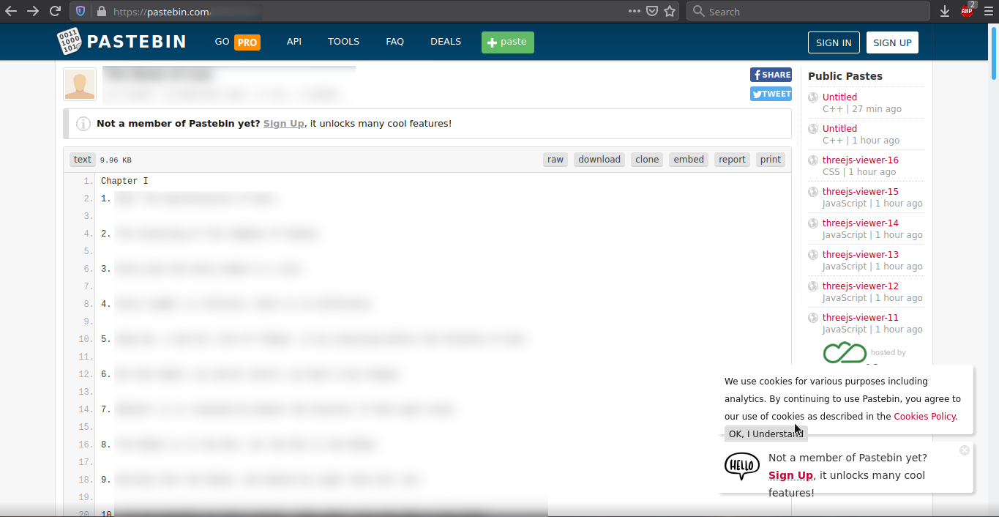
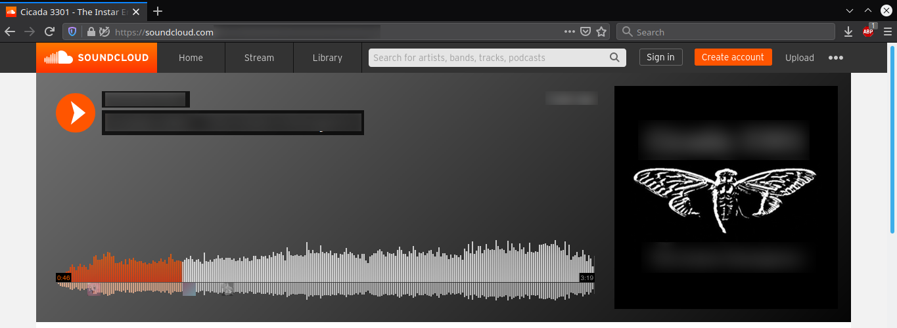
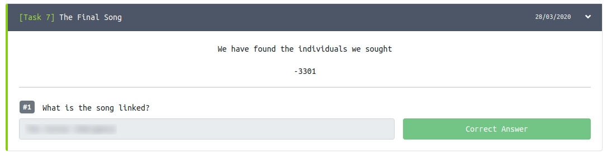

TryHackMe - Cicada-3301 Vol:1

Contenido
| Titulo | Cicada-3301 Vol:1 |
|---|---|
| Room | Cicada-3301 Vol:1 |
| Info | A basic steganography and cryptography challenge room based on the Cicada 3301 challenges |
| Puntos | 148 |
| Dificultad | Media |
| Maker | Cryillic |
Analyze The Audio
Al inicio tenemos un archivo de audio (3301.wav) al cual le añadimos una capa de espectrograma utilizando Sonic Visualiser.

Nos devuelve una imagen QR el cual obtuvimos una URL utilizando el Lector QR inlite.

Decode the Passphrase
Una URL hacia Pastebin.


Utilizamos CyberChef para poder decodificar la frase y la clave en base64.

Utilizamos Vigenere para poder codificar nuevamente (como el reto lo indica) con la clave que encontramos a la frase decodificada.

Gather Metadata
Utilizamos la frase que codificamos para extraer el archivo dentro de la imagen welcome.jpg, y nos da una url de una image.

La imagen de la URL. 
Find Hidden Files
En este Task intentamos con muchas herramientas de esteganografia y encontramos la correcta, Outguess para poder obtener la informacion (archivo) dentro de la imagen.

En el mensaje nos indica que debemos de romper el hash para poder encontrar el libro.Tambien una combinacion de letras y numeros y que debemos de ir hacia delante si el numero es positivo, y hacia atras si el numero es negativo.
El hash:
b6atryhackmetryhackmetryhackmetryhackmetryhackmetryhackmetryhackmetryhackmetryhackmetryhackmetryhackmetryhackmetryhackme348
Verificamos que tipo de hash es y vemos que es SHA2-512.

Utilizamos https://md5hashing.net para poder obtener el texto el cual es una URL a pastebin. 
Book Cipher
La URL de pastebin contiene lo que parece ser el capitulo de un libro. 
Recordemos el nombre del challenge Cicada 3301, investigamos acerca del reto, especificamente de la solucion, y encontramos que el reto se parece bastante a Cicada 3301 - The Book Cipher, por lo que utilizamos el ejemplo para obtener la URL para el Task 7, para ello escribimos un pequeño script en python al cual le pasamos la linea del libro y el numero de letra que debe extraer, omitimos la primera letra ya que hace referencia al Capitulo I (es el que tenemos).

Hay que mencionar que este tipo de cifrado para resolverlo se puede utilizar la sintaxis siguiente (par1:par2:par3), pueden ser numeros de pagina, linea, palabra o letra, para este reto era sencillo: linea:letra y omitimos los espacios ya que devuelve un valor distinto.

Tambien, este cifrado para resolverlo comenzamos desde la primera letra de la Oracion y no de la linea, en el caso de los numeros negativos vamos hacia atras de la oracion como nos indicaba el mensaje.
Spoiler
El script: Script.py
Al resolverlo por completo nos devuelve una URL acortada que nos redirige a soundcloud. 
The Final Song
Ingresar el Nombre de la Cancion encontrada. 